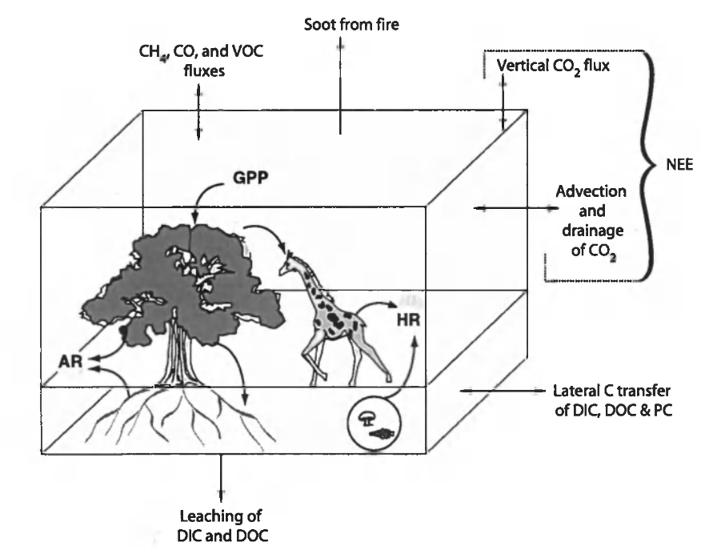
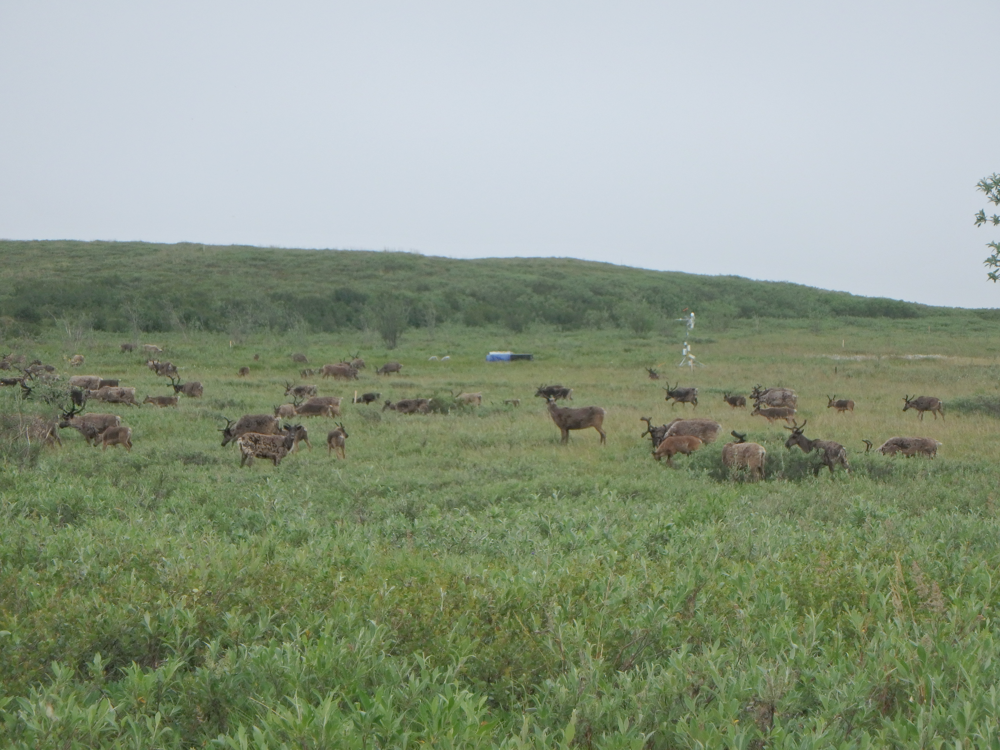

Reconciling Carbon-cycle Concepts, Terms, and Methods
Chapin et al. (2006) is a helpful resource that clarifies some key terms and concepts that are used to discuss carbon exchange. Different fields have different conventions (e.g. micrometeorology vs ecology) and it can get pretty confusing when you’re reading literature from a mix of fields or trying to write to a broad audience. A good example
NEP
Net ecosystem productivity (NEP) is the primary component of the C balance in most terrestrial ecosystems. It is defined as the difference between ecosystem scale photosynthesis and respiration: \(NEP = GPP - ER\) (e.g., Lovett et al., 2006). The sign convention is opposite of what micrometeorologists often use. Positive (+) indicates accumulation of C in the ecosystem, negative (-) indicates loss of C from the ecosystem.
- Gross primary productivity (GPP) is the total photosynthetic uptake of carbon dioxide \(CO_2\) by an ecosystem.
- Ecosystem respiration (ER) is the total aerobic respiration of \(CO_2\) by an ecosystem: \(ER = AR + HR\).
- Autotrophic respiration (AR) is \(CO_2\) respired by primary producers (i.e., plants). From this we can define net primary production (NPP) as the difference between GPP and AR: \(NPP = GPP-AR\)
- Heterotrophic (HR) respiration is \(CO_2\) respired by all other living organisms (i.e., bacteria, animals, fungi). This \(CO_2\) is also derived from GPP, but in a more roundabout way.
NEE
Net ecosystem exchange NEE is net flux of \(CO_2\) observed between an ecosystem and the atmosphere (e.g., by eddy covariance [EC] or flux chamber [FC] methods). It is frequently treated as the inverse of NEP: i.e., NEE = ER - GPP (Aubinet et al., 2012). The sign convention is opposite of NEP because NEE was defined by atmospheric scientists; positive (+) indicates accumulation of C in the atmosphere, negative (-) uptake of C from the atmosphere.
- At small spatial scales and over short timescales \(NEP \approx -NEE\) (Baldocchi, 2003) but strictly speaking, they are not equivalent.
- Over larger/longer scales they diverge:
- ER derived \(CO_2\) dissolved in ground water:
- Transported out of an ecosystem; it will not be observed by eddy covariance methods but its still part of NEP
- Transported into an ecosystem; it will be observed by eddy covariance methods but is actually part of NEP in ecosystem the dissolved \(CO_2\) orriginated in
- During fires, NEE and NEP are also drastically different, because \(CO_2\) fluxes derived from combustion are not included in NEP
- Can have \(NEP \approx 0\) while \(NEE >> 0\)
- ER derived \(CO_2\) dissolved in ground water:
The NECB
Chapin et al. (2006) define the term net ecosystem carbon balance (NECB) to describe the sum of all components of the carbon (C) balance for an ecosystem. The NECB is a broad concept, we can’t measure it completely with micrometeorologic methods alone. It represents the net change in ecosystem C per unit time: \(NECB = \frac{dC}{dt}\). It includes:
- All sinks and sources of both organic and inorganic C
- Natural b anthropogenic in origin
- Fluxes of C via numerous pathways:
- Terrestrial ↔︎ atmospheric
- Terrestrial ↔︎ aquatic
- Bulk/particulate transport
Components of the NECB

\[ NECB = -NEE + F_{CO} + F_{CH4} + F_{VOC} + F_{DIC} + F_{DOC} + F_{PC} \]
- NEE: is the primary component of the NECB in most ecosystems.
- Over short timescales, in some ecosystems \(NECB \approx -NEE\)$ Baldocchi (2003). But as the temporal and/or spatial scales increase NEE and NECB diverge.
- \(F_{CO}\): Fluxes of carbon monoxide (CO)
- Anthropogenic systems (e.g., combustion engines) and forest fires are the primary sources of CO
- Soils are fairly strong CO sinks depending on temperature, most uptake occurs in the tropics Cowan et al. (2018)
- \(F_{CH4}\): Fluxes of methane (CH4)
- Ecosystem ↔︎ atmosphere \(CO_4\) fluxes
- A significant component of the NECB in many wetland ecosystems (e.g., Lai (2009); Serrano-silva et al. (2014))
- Especially important for GHG budgets because it has a global warming potential 27 times that of \(CO_2\) on a 100 yr timescale (IPCC (2021))
- Methane exchange is governed by the balance between \(CH_4\) production (methanogenesis) and consumption (methanotrophy) - but this isn’t fully included in \(F_{CH4}\)
- \(F_{VOC}\): Fluxes of volatile organic compounds (VOC)
- Organic compounds (e.g., isoprene) are emitted by living plants
- Small, but non-negligible contributions - isoprene fluxes were less 0.5% the magnitude of NEE in a temperate poplar forest Portillo-Estrada et al. (2018)
- \(F_{DIC}\) & \(F_{DOC}\): Fluxes of dissolved inorganic carbon (DIC) and dissolved organic carbon (DOC)
- DIC - Primarily dissolved \(CO_2\) in most systems, but can also include dissolved \(CH_4\), e.g., in peatlands (Waddington & Roulet (1997) Dinsmore et al. (2010); Campeau et al. (2017))
- DOC - More complex organic compounds (e.g., root exudates)
- Varies drastically by ecosystem and timescale. In the Alaskan Arctic, dissolved C (DIC + DOC) are estimated to offset between 7% and 20% of NEP annual Kling et al. (1991); a literature review found proportions of NEP offset by dissolved C fluxes ranged from <1% in a boreal forest to 590% in a freshwater marsh Webb et al. (2019).
- \(F_{PC}\): Fluxes of bulk/particulate carbon (PC)
- A bit of a catch all - flux of particulate carbon can include all sorts of things:
- Fluvial or aeolian erosion/deposition of organic matter
- Grazing herbivores (C removal) and animal droppings (C deposition) Figure 1
- Timber harvesting or agriculture (bulk C removal)
- Spatially and temporally variable - heavily dependent upon the system you’re looking at.
- A bit of a catch all - flux of particulate carbon can include all sorts of things:
